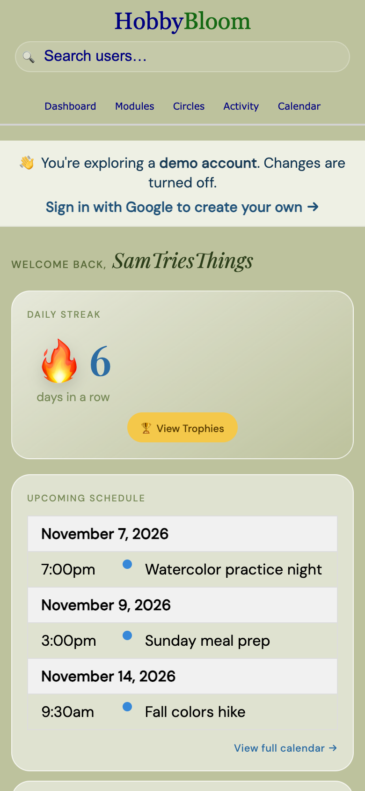
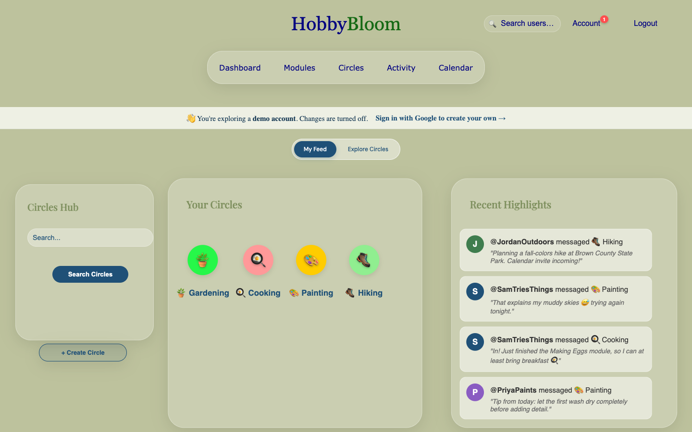
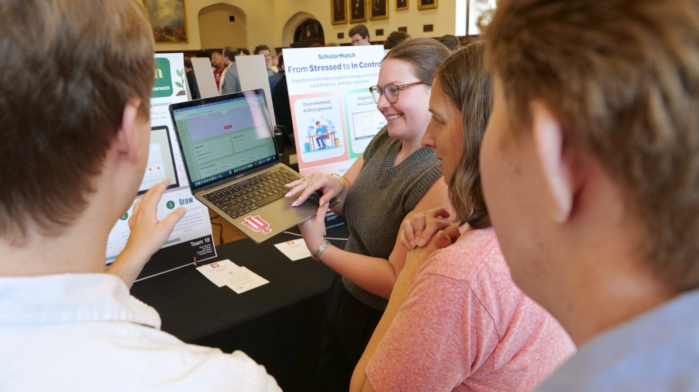
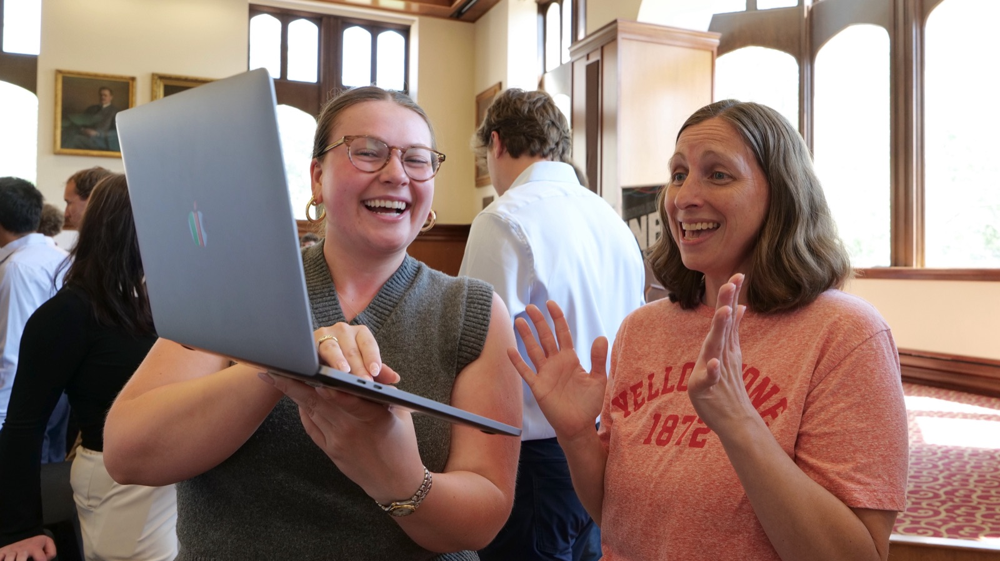

The problem
Starting a hobby is hard when you don't know where to begin, or anyone who does it.
After high school, it's hard to step outside the bubble you grew up in, and trying something new comes with a fear of being bad at it. We designed for people aged 18 to 25 who want to start a hobby but:
- Don't know where to begin,
- Don't have anyone around them who does it, and
- Can't picture where the hobby could take them.
YouTube can teach you to knit, but it can't introduce you to someone who knits. HobbyBloom pairs guided learning with Circles: groups of people who share your hobby.
My role and the team
I led design for the whole product and spearheaded two features: the Dashboard and Circles.
- Gabrielle Roose (me)Design lead · Dashboard and Circles
- Jack BruceDatabase architect · Activity feed and messaging
- Chris MartinLead PHP developer · onboarding and recommendations
- Drew BaumanModules, calendar and My Content
- The Dashboard: gamified with streaks and badges, so opening the app feels exciting and gives you a reason to come back.
- Circles: groups built around a hobby, where members chat, share progress and plan events.
- Design across the product: I set the visual identity (sage, navy and sky blue; Playfair Display and DM Sans) and ran user testing. When research said something belonged on a teammate's page, I'd bring it to them or build it myself.
We worked in 14 two-week sprints. Our hardest moment came hours before a live demo, when a merge moved our main CSS file and the site's styling seemed to vanish. We fixed it in time and made a rule: everything is finished before demo day.
Research
A survey of 22 people and five interviews showed the interest is there, but the starting point isn't.
- people surveyed, nearly all college students
- 22
- wished they had more time for hobbies
- 13
- named a new hobby they want to learn
- 18
- already learn their hobbies online
- 17
Hours a week on hobbies now
Number of people, out of 22
| 0–1 hours | |
|---|---|
| 2–5 hours | |
| 6–10 hours | |
| 10+ hours |
Hours a week they wish they had
Number of people, out of 22
| 0–1 hours | |
|---|---|
| 2–5 hours | |
| 6–10 hours | |
| 10+ hours |
- People want more time for hobbies: most spend 2–5 hours a week but want 6–10. Crocheting, sewing and cooking topped the list of hobbies to learn.
- Learning is online but scattered across Instagram, TikTok, YouTube and Pinterest, with too many creators to choose from.
- Seeing others cuts both ways: it builds belonging, but comparing yourself to people with more time makes you feel behind. So HobbyBloom celebrates your own streaks and badges instead of ranking you.
“Seeing other people participate in my hobby makes me feel a part of a group.”
Survey respondent
“Some people have more time than I do, and it makes me feel like I am not moving fast enough.”
Survey respondent
Personas
-
Guitar
Derrick Shay
20 · music student at IU
- Wants
- Extra guitar lessons to practice with between classes.
- Struggles
- Free content is scattered and doesn't follow any order.
How HobbyBloom helps: one place for guitar advice at his level, for steady learning alongside school.
-
Fishing
Isaiah Carpenter
22 · works full time in a small town
- Wants
- New tricks to impress his friends, and maybe to fish competitively.
- Struggles
- Beyond his friends, he only has few places to get advice.
How HobbyBloom helps: tips from a whole community of people who fish.
-
Botany
Adoline Webb
23 · part-time student and botanist
- Wants
- To share what she knows about plants and keep learning.
- Struggles
- Outside home, she has few chances to meet others into plants.
How HobbyBloom helps: she can join or start a Circle about botany.
-
Something new
Leonard O'Hare
37 · dad of 11-year-old Steven
- Wants
- A positive place for Steven to explore new interests.
- Struggles
- Steven is bored with his old hobbies, and Leonard doesn't know where to start.
How HobbyBloom helps: Leonard can review hobby modules and pick ones Steven is curious about, so Steven explores with a parent involved.
Ideas and iterations
Wireframes mapped the journey from sign-up to Circles; three decisions shaped the final look.

- A calm, consistent identity: the sage, navy and sky blue palette held from the first wireframe to launch, so the site felt like one product.
- Glassmorphism: translucent, blurred cards over the sage page, light enough for a hobby app. We tested its readability and raised the contrast after feedback.
- Circles as a grid, not a list: the first list felt flat and empty; a grid shows more at once and makes each Circle feel like a place to visit.
- Your week, up front: the final Dashboard kept the wireframe's streak at the top and added your upcoming schedule, pulled from the calendar.
What we built
A web app where you pick hobbies, learn through modules, keep a streak and join Circles.

Building it
Three challenges showed me how tightly design and code are linked.
- A design choice broke the back end. We added emojis to hobby names (“🪴 Gardening”), and the database could no longer match them to modules. Chris wrote a regular expression to strip the emoji before each query.
- Styling a third-party calendar. FullCalendar brings its own stylesheet, so matching our palette meant fighting CSS specificity. It's close, not perfect.
- Keeping it alive after graduation. I moved HobbyBloom from Luddy's school server to Railway myself: rebuilt the database, fixed security issues and added a read-only demo account so anyone can try it.
Testing
Two rounds with about 10 testers each turned confusion into concrete fixes.
Testers made their own accounts (16 people outside the team signed up), then either followed set tasks with a feedback form or explored freely while thinking aloud.
| What testing showed | What we changed |
|---|---|
| New users with no Circles saw an empty page. | Added a “Suggested for you” grid. |
| Selected hobbies were hard to spot during onboarding. | Made the selected state much more distinct. |
| Returning users scrolled to find their modules. | Added Completed and Favorited tabs. |
| The streak didn't stand out on the Dashboard. | Tightened the hierarchy so it reads first. |
| Some text was low contrast on glass cards. | Raised contrast across every page. |
A follow-up check confirmed it: people moved more confidently, and Circles no longer felt like a dead end.
Outcome
All eight features shipped, and HobbyBloom was one of 56 projects at the 2026 Informatics Capstone.


At the fair, Kate Muehlhaus, an Informatics lecturer at Luddy, told me how proud she was to see four years of courses come together in one project, and that she could see the effort we'd put in. That meant a lot: she teaches several of the courses HobbyBloom was built on, including INFO I308, where we learned databases with MySQL and PHP.
HobbyBloom is still live. What's left: pre-filled module editing, a module search bar and a Google Calendar sync that works every time.
Reflection
The product came together when the team did.
- Communicate more than you think you need to. Once we added a weekly meeting and a shared to-do list, our pace roughly doubled.
- Finish before demo day. The missing-CSS scare made the day before the real deadline.
- Build things that connect. HobbyBloom came alive when the hobby you pick on day one fed your Dashboard, Circles and achievements.
Next: Circles that connect you with people nearby, learning paths that adapt to your quiz results, and a version 5 redesign I'm working on now.